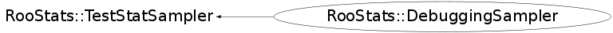

class RooStats::DebuggingSampler: public RooStats::TestStatSampler
DebuggingSampler is a simple implementation of the DistributionCreator interface used for debugging. The sampling distribution is uniformly random between [0,1] and is INDEPENDENT of the data. So it is not useful for true statistical tests, but it is useful for debugging.
Function Members (Methods)
This is an abstract class, constructors will not be documented.
Look at the header to check for available constructors.
public:
Data Members
private:
| TRandom* | fRand | |
| Double_t | fSize | |
| RooRealVar* | fTestStatistic |
Class Charts
{kind=link}
{kind=link}
{kind=link}
{kind=link}

Function documentation
virtual ~DebuggingSampler()
SamplingDistribution* GetSamplingDistribution(RooArgSet& paramsOfInterest)
Main interface to get a ConfInterval, pure virtual
Double_t EvaluateTestStatistic(RooAbsData& , RooArgSet& )
Main interface to evaluate the test statistic on a dataset
void SetNuisanceParameters(const RooArgSet& )
specify the nuisance parameters (eg. the rest of the parameters)
{}void SetParametersForTestStat(const RooArgSet& )
specify the values of parameters used when evaluating test statistic
{}void SetTestSize(Double_t size)
set the size of the test (rate of Type I error) ( Eg. 0.05 for a 95% Confidence Interval)
{fSize = size;}void SetConfidenceLevel(Double_t cl)
set the confidence level for the interval (eg. 0.95 for a 95% Confidence Interval)
{fSize = 1.-cl;}void SetTestStatistic(RooStats::TestStatistic* )
Set the TestStatistic (want the argument to be a function of the data & parameter points